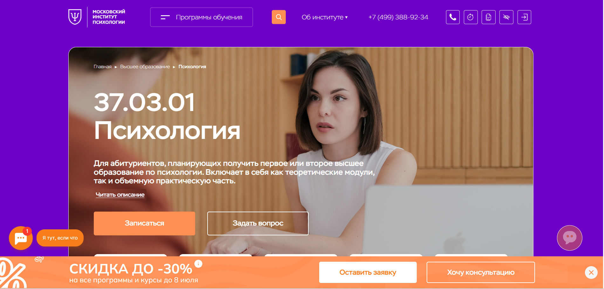
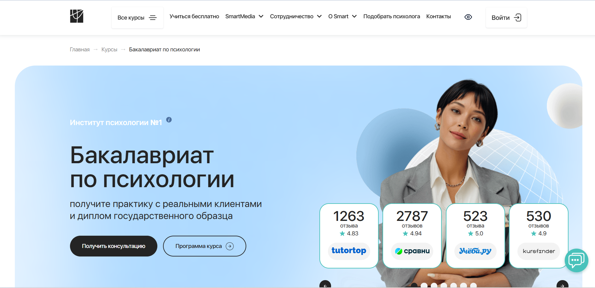
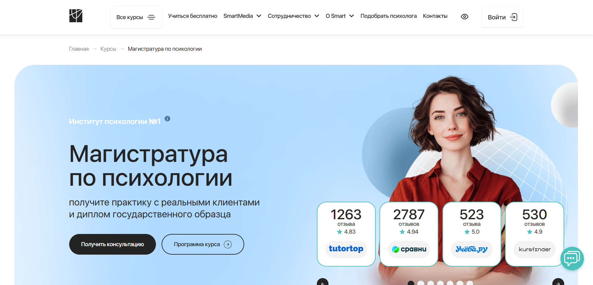
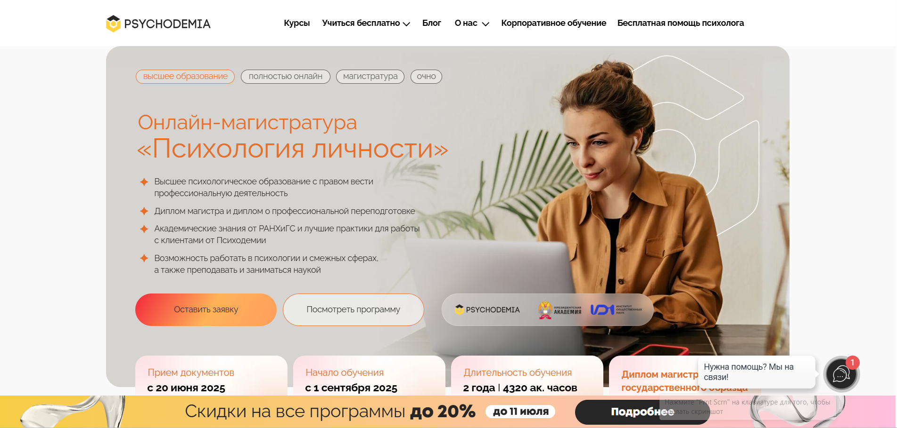
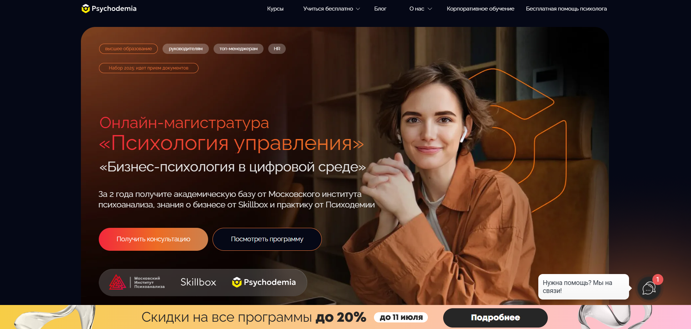
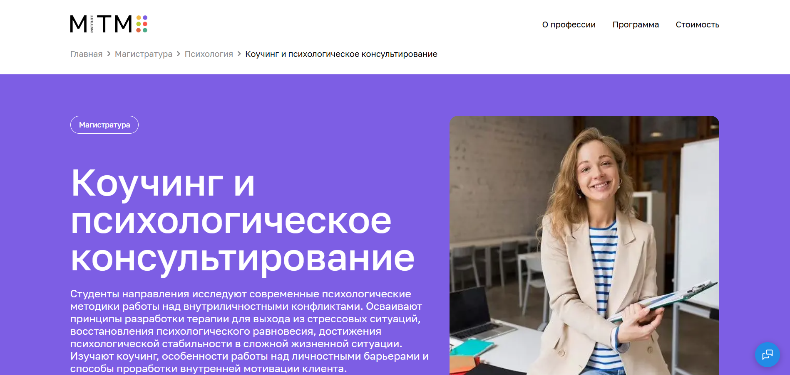

Обучение психологии дистанционно — это удобный способ получить высшее психологическое образование без привязки к очному формату. Благодаря применению дистанционных технологий, студенты изучают практическую и клиническую психологию, развивают профессиональные навыки и осваивают методы психологического консультирования. Выпускники получают дипломы государственного образца, подтверждающие квалификацию клинического или практического психолога. Мы составили рейтинг лучших программ высшего дистанционного обучения по психологии в 2025 году — на базе университетов, где обучение проходит дистанционно с сохранением высокого качества подготовки.
Информация обновлена:
ТОП онлайн-программ высшего образования по психологии
- 🏆 Психология 37.03.01 (бакалавриат) – Московский институт психологии (по промокоду onlinekursy скидка 🎁 10%)
- 🏆 Бакалавриат по психологии – Институт психологии Smart
- 🏆 Магистратура по психологии – Институт психологии Smart
- Психология личности, магистратура – РАНХиГС и Психодемия
- Бизнес-психология в цифровой среде, магистратура – Московский институт психоанализа и Психодемия
- Психология, бакалавриат – Московский институт технологий и управления
- Коучинг и психологическое консультирование, магистратура – Московский институт технологий и управления
- Практическая психология, бакалавриат — Московский Институт Профессионального Образования (по промокоду onlinekursy действует скидка 🎁 10%)
Отличительные преимущества каждой дистанционной программы высшего образования по психологии
| № | Курс и учебное заведение | Отличительные преимущества | Ссылка |
|---|---|---|---|
| 🥇 |
Психология 37.03.01 (бакалавриат) Московский институт психологии |
Два диплома (высшее + проф. переподготовка), доступно без очного присутствия, скидки до 30%, перевод из других вузов | Перейти |
| 🥈 |
Бакалавриат по психологии Институт психологии Smart |
Реальная практика с клиентами через 12 месяцев, членство в профсообществах, 2 диплома, платформа 24/7 | Перейти |
| 🥉 |
Магистратура по психологии Институт психологии Smart |
Доступ к карьерному центру и наставничеству, практика с 1-го курса, диплом магистра + ДПО | Перейти |
| 4 |
Психология личности РАНХиГС и Психодемия |
Диплом магистра + практика на платформе Ultimate Education, академическая база от РАНХиГС | Перейти |
| 5 |
Бизнес-психология в цифровой среде Московский институт психоанализа и Психодемия |
Практика в IT-компаниях, 3 документа: магистр + повышение квалификации + сертификат Skillbox | Перейти |
| 6 |
Психология Московский институт технологий и управления |
Самая низкая цена (от 30 000 ₽/семестр), обучение без ЕГЭ, гибкий онлайн-формат | Перейти |
| 7 |
Коучинг и психологическое консультирование Московский институт технологий и управления |
Сильный упор на коучинг, дистанционная магистратура, обучение без ЕГЭ, помощь в трудоустройстве | Перейти |
| 8 |
Практическая психология Московский Институт Профессионального Образования |
Снижение срока обучения до 3,6 лет, упор на прикладные навыки, простое поступление без ЕГЭ | Перейти |
1. 🏆 Психология 37.03.01 (бакалавриат) – Московский институт психологии

- ✅ Официальный сайт: mip.institute
- 💸 Цена обучения: от 95 000 ₽ в год (при полной оплате — от 364 905 ₽).
- 💳 Рассрочка: доступна от 1 года оплаты, без процентов по 7916,67 ₽/мес.
- 📚 Формат: очно-заочная форма с применением дистанционных технологий: онлайн-лекции, тесты, задания, практические кейсы.
- ⏳ Продолжительность: от 3 до 4,5 лет.
- 📜 Документ: диплом о высшем образовании и диплом о профессиональной переподготовке.
- 📝 Трудоустройство: выпускники получают практические навыки для начала карьеры в сфере психологии.
- 🔷 Для кого подходит курс: выпускникам 11 классов, лицам со средним профессиональным и высшим образованием, желающим освоить профессию психолога дистанционно.
Особенности:
Программа направлена на подготовку специалистов с высшим психологическим образованием в дистанционном формате. Занятия проходят на образовательной платформе с применением современных дистанционных технологий. Студенты изучают дисциплины, необходимые для практического психолога и консультанта, осваивают методы психологической диагностики и консультирования. Доступ к занятиям обеспечивается из любого региона России. Дополнительно к основному диплому студенты получают диплом о профессиональной переподготовке в области организационной, семейной или кризисной психологии. Обучение подходит как для получения первого образования, так и для профессионального переобучения.
Чему учатся студенты:
- Общая психология и анатомия нервной системы
- Методы научного психологического исследования
- Введение в профессию и практическая психология
- Клиническая психология и возрастные особенности
- Психологическое консультирование и психотерапевтические техники
- Организационная и семейная психология
Преподаватели:
- Перемолотова Ирина Александровна — семейный психолог, арт-терапевт, EMDR-терапевт, гештальт-терапевт, коуч, супервизор, автор трансформационных психологических игр.
Преимущества:
- Применение дистанционного формата обучения
- Второй диплом о профессиональной переподготовке включен в стоимость
- Возможность перевода из других вузов без потери курса
- Обучение проходит дистанционно, не требуется очного присутствия
- Скидки до 30% за высокие баллы ЕГЭ, социальные категории
- Индивидуальный график для совмещения с работой
- Преподаватели — действующие психологи с опытом до 25 лет
- Платформа обучения удобна для использования в любом регионе
Отзывы учеников:
Студенты положительно отзываются о гибком графике, доступности онлайн-занятий и возможности совмещать учебу с работой. Отмечают высокий уровень преподавания и полезность практической части. Преимущество — два диплома и дистанционное получение высшего образования по психологии.
Перейти на официальный сайт2. 🏆 Бакалавриат по психологии – Институт психологии Smart

- ✅ Официальный сайт: smart-inc.ru
- 💸 Цена обучения: от 78 700 ₽ за семестр
- 💳 Рассрочка: доступна, возможна оплата в кредит
- 📚 Формат: с применением дистанционных технологий — лекции, тесты, домашние задания, вебинары
- ⏳ Продолжительность: от 4 лет
- 📜 Документ: диплом государственного образца бакалавра + диплом ДПО
- 📝 Трудоустройство: Центр карьеры, программы SmartHelp и SmartMental с реальными клиентами
- 🔷 Для кого подходит курс: выпускникам школ, практикующим без диплома, тем, кто меняет профессию
Особенности:
Обучение на факультете психологии проходит полностью дистанционно, что удобно для тех, кто совмещает учебу и работу. Благодаря современным образовательным технологиям, студенты осваивают практическую психологию без привязки к очному формату. Уже через 12 месяцев можно начать работать с реальными клиентами, получая навыки психологического консультирования. Поддержка доступна 24/7, а преподаватели — действующие специалисты с учеными степенями. После прохождения курса выпускники получают дипломы государственного образца и могут сразу начать частную практику или продолжить образование. Программа включает направления психологии, полезные в реальной практике — от клинической до социальной.
Чему учатся студенты:
- Оказывать психологическую помощь взрослым и детям
- Работать с группами и индивидуальными запросами
- Проводить консультации с использованием техник КПТ, гештальта, АСТ и транзактного анализа
- Разрабатывать коррекционные программы
- Осваивать практическое применение клинической психологии
Преподаватели:
- Оксана Денисова — доктор педагогических наук, кандидат психологических наук, профессор, руководитель магистратуры, эксперт в сфере управления образованием
- Светлана Варнавская — преподаватель института, специалист в области психологического консультирования
Преимущества:
- Дистанционное обучение с гибким графиком
- Практика с первыми клиентами уже через 12 месяцев
- Включение в профессиональные сообщества ОППЛ и АППП
- Индивидуальное сопровождение студентов от поступления до диплома
- Современная платформа обучения с круглосуточной поддержкой
- Два диплома: бакалавра и профессиональной переподготовки
- Резиденты «Сколково» — признание на государственном уровне
- Формат подходит для получения высшего психологического образования дистанционно
Отзывы учеников:
Студенты особенно ценят возможность учиться дистанционно без потери качества, четкость программы и доступность преподавателей. Отмечают, что обучение помогает начать карьеру в профессии психолога уже во время курса, а не после его окончания. Высоко оценивается включение реальной практики, поддержка кураторов и возможность общения с коллегами в профессиональном сообществе.
Перейти на официальный сайт3. 🏆 Магистратура по психологии – Институт психологии Smart

- ✅ Официальный сайт: smart-inc.ru
- 💸 Цена: от 106 200 ₽ за семестр
- 💳 Рассрочка: возможна, включая оплату в кредит и налоговый вычет 13%
- 📚 Формат: дистанционный формат, лекции, онлайн-семинары, практические задания, доступ к платформе 24/7
- ⏳ Продолжительность: 2–2,5 года (в зависимости от направления)
- 📜 Документ: диплом магистра государственного образца и диплом профессиональной переподготовки
- 📝 Трудоустройство: реальная практика с клиентами и доступ к карьерному центру
- 🔷 Для кого подходит курс: выпускникам школ, специалистам без профильного образования и желающим сменить профессию
Особенности:
Программа разработана для тех, кто хочет освоить профессию психолога дистанционно и при этом получить практические навыки уже в процессе обучения. Обучение проводится с применением дистанционных технологий, что позволяет совмещать учебу с работой и другими обязанностями. В рамках магистратуры студенты проходят практику с реальными клиентами через SmartHelp и SmartMental. Слушатели изучают современные методы консультирования и получают доступ к профессиональному сообществу. Институт входит в состав ОППЛ и является резидентом «Сколково». После окончания программы выпускники получают дипломы государственного образца, что позволяет работать как в частной практике, так и в государственных учреждениях.
Чему учатся студенты:
- Психологическому консультированию и диагностике
- Работе с возрастной и клинической психологией
- Кризисному и семейному консультированию
- Оценке и коррекции психологических состояний
- Методам арт-терапии, КПТ, АСТ и другим подходам
- Психологии управления и бизнес-консультированию
Преподаватели:
- Оксана Денисова — доктор педагогических наук, кандидат психологических наук, профессор кафедры «Педагогика и психология», соавтор патента «Система высшего образования онлайн»
- Светлана Варнавская — эксперт в области психологической практики, преподаватель курса
Преимущества:
- Обучение проходит дистанционно без отрыва от работы
- Практика с первыми клиентами уже на 1-м году обучения
- Гибкий график и круглосуточная поддержка кураторов
- Членство в профессиональных ассоциациях (ОППЛ, АППП)
- Доступ к карьерному центру и наставничеству от практиков
- Возможность изучать клиническую, детскую и бизнес-психологию
- Выдача двух дипломов: магистра и ДПО
- Уникальная образовательная среда от резидента «Сколково»
Отзывы учеников:
Студенты часто отмечают высокий уровень дистанционного обучения, насыщенность учебной программы и полезность практического блока. Хвалят преподавателей за доступность, профессионализм и готовность помогать на каждом этапе. Многие подчеркивают, что уже в процессе обучения начали консультировать клиентов и применять знания на практике.
Перейти на официальный сайт4. Психология личности – РАНХиГС и Психодемия

- ✅ Официальный сайт: psychodemia.ru
- 💸 Цена обучения: 175 000 ₽ за семестр.
- 💳 Рассрочка: от 263 ₽ в месяц при оформлении образовательного кредита с господдержкой.
- 📚 Формат: дистанционное обучение, онлайн-занятия, видеолекции, семинары, тренинги, коуч-сессии, разбор заданий, защита диплома очно.
- ⏳ Продолжительность: 2 года (4320 академических часов).
- 📜 Документ: диплом магистра государственного образца и диплом о профессиональной переподготовке.
- 📝 Трудоустройство: возможно в сфере психологии, HR, образовании, коучинге и смежных областях. Также можно преподавать и заниматься наукой.
- 🔷 Для кого подходит курс: для выпускников бакалавриата, желающих освоить профессию психолога и получить высшее психологическое образование дистанционно.
Особенности:
Программа с дистанционным форматом подходит тем, кто хочет получить высшее психологическое образование без привязки к месту. Удобное расписание позволяет совмещать учебу с работой. Студенты изучают клиническую, организационную и практическую психологию, осваивают методы психологической диагностики и консультирования. Практические занятия проходят на базе платформы Ultimate Education или по месту работы студентов. Защита магистерской диссертации проводится очно. По окончании обучения выпускники получают диплом магистра и могут вести профессиональную деятельность психолога.
Чему учатся студенты:
- Методам индивидуального и группового консультирования
- Проведению тренингов и коуч-сессий
- Работе в сфере организационной и социальной психологии
- Психологической диагностике и разработке упражнений для клиентов
- Анализу и решению реальных кейсов из практики
- Созданию собственного карьерного трека
Преподаватели:
- Агадуллина Елена — кандидат психологических наук, специалист по социальной психологии, исследователь, автор научных статей в Science, Nature Communications, PNAS.
Преимущества:
- Формат обучения подходит для совмещения с работой
- Возможность работать дистанционно в профессии психолога
- Применение дистанционных технологий и практических форматов
- Платформа обучения доступна из любой точки мира
- Участие в семинарах, тренингах и командной работе
- Диплом дает право вести профессиональную деятельность
- Практика на реальных кейсах с использованием современных методик
- Психологическая база от РАНХиГС и практики от Психодемии
Отзывы учеников:
Студенты часто подчеркивают удобный дистанционный формат, возможность совмещать обучение с работой и сильную академическую базу. Отмечают практическую направленность и высокую квалификацию преподавателей. Особенно ценится возможность сразу применять знания в профессии психолога.
Перейти на официальный сайт5. Бизнес-психология в цифровой среде – Московский институт психоанализа и Психодемия

- ✅ Официальный сайт: psychodemia.ru
- 💸 Цена: от 160 000 ₽ за семестр
- 💳 Рассрочка: от 240 ₽ в месяц по образовательному кредиту с господдержкой
- 📚 Формат: дистанционное обучение, видеолекции, анализ кейсов, практические задания, итоговая защита офлайн
- ⏳ Продолжительность: 2 года
- 📜 Документ: диплом магистра государственного образца + удостоверение о повышении квалификации + сертификат Skillbox
- 📝 Трудоустройство: практика в российских IT-компаниях или на текущем месте работы
- 🔷 Для кого подходит курс: для руководителей, HR-специалистов, психологов, менеджеров, предпринимателей и всех, кто хочет развиваться в области организационной психологии
Особенности:
Программа предлагает обучение психологии дистанционно с применением современных дистанционных технологий и кейсов из реального бизнеса. Преподаватели — практикующие бизнес-консультанты и клинические психологи. Формат позволяет совмещать учебу с работой, подключаться к занятиям в любое удобное время и из любой точки мира. Особое внимание уделено развитию практических навыков и методов психологической диагностики. Студенты получают доступ к цифровым образовательным платформам, участвуют в групповой работе и готовят собственный проект, который защищают офлайн. Обучение проходит в формате, сочетающем профессиональное развитие и освоение востребованных компетенций.
Чему учатся студенты:
- Работать с мотивацией сотрудников и строить сильные команды
- Применять методы коучинга и развивать сотрудников
- Выстраивать эффективную коммуникацию и решать конфликты
- Анализировать данные и использовать их для роста бизнеса
- Оптимизировать процессы и управлять проектами
- Осуществлять оценку компетенций и формировать обучающие программы
Преподаватели:
- Гули Базарова — кандидат психологических наук, амбассадор бизнес-школы «Сколково», Executive-коуч, более 25 лет опыта
- Тахир Базаров — доктор психологических наук, профессор МГУ, президент Ассоциации бизнес-психологов России
- Александр Крымов — кандидат психологических наук, преподаватель, бизнес-консультант, автор более 100 статей
- Максим Цветков — клинический психолог, преподаватель МИП, практикующий специалист
Преимущества:
- Формат обучения — дистанционный с элементами очного формата
- Доступ к занятиям из любой точки мира
- Получение трех документов по окончании
- Реальная практика в IT-компаниях
- Удобная оплата с господдержкой
- Актуальные знания от экспертов с опытом в бизнесе и психологии
- Развитие практических навыков для применения в работе
- Фокус на психологическом консультировании и управлении персоналом
Отзывы учеников:
Студенты отмечают удобный дистанционный формат, насыщенность практическими занятиями, высокий уровень преподавания и доступную подачу материала. Многие подчеркивают, что курс помогает совмещать обучение с работой и сразу применять знания на практике. Также в отзывах часто упоминается поддержка со стороны кураторов и гибкость процесса обучения.
Перейти на официальный сайт6. Психология – Московский институт технологий и управления

- ✅ Официальный сайт: mitm.institute
- 💸 Цена: от 30 000 ₽ за семестр со скидкой 30% (до 10 июля)
- 💳 Рассрочка: беспроцентная на 12 месяцев от 5 000 ₽ в месяц
- 📚 Формат: дистанционные лекции, практические занятия, личный кабинет, онлайн-тесты
- ⏳ Продолжительность: 4 года 6 месяцев (3.5 года при наличии СПО или ВО)
- 📜 Документ: диплом бакалавра государственного образца
- 📝 Трудоустройство: программа содействия, помощь в запуске частной практики
- 🔷 Для кого подходит курс: выпускники школ, колледжей, специалисты с высшим образованием, студенты других вузов
Особенности:
Программа ориентирована на получение высшего психологического образования в дистанционном формате. Обучение проходит с применением современных дистанционных технологий, что позволяет студентам изучать практическую и клиническую психологию без привязки к месту. Все лекции доступны в записи, а практическое занятие проводится на платформе института. Поступление возможно без ЕГЭ и вступительных испытаний, обучение подходит тем, кто совмещает учебу с работой. Студенты получают профессиональные знания в области психологического консультирования и психодиагностики, а также навыки оказания квалифицированной помощи клиентам. По окончании курса выпускники получают дипломы бакалавра, признаваемые на всей территории РФ.
Чему учатся студенты:
- Психологическому консультированию клиентов разных возрастов
- Проведению психодиагностики и интерпретации результатов
- Работе с внутриличностными проблемами и кризисными состояниями
- Анализу особенностей развития личности
- Применению знаний в социальной, возрастной и семейной психологии
Преподаватели:
- Екатерина Шмелина — практикующий психолог, выпускница программы, специалист по началу карьеры
- Максим Умыркин — преподаватель, сопровождающий студентов, эксперт по теоретическим модулям
- Кристина Рыбацкая — куратор курса, специалист в области психологии личности
- Мария Федосеева — педагог с опытом в зоопсихологии, консультант по профилям подготовки
- Мирон Павлов — ментор и наставник студентов старше 30 лет, спикер профессиональных сообществ
Преимущества:
- Обучение проходит дистанционно — без необходимости посещать вуз
- Подача документов и экзамены — полностью онлайн
- Поддержка кураторов и технической службы 24/7
- Актуальные учебные программы под требования работодателей
- Возможность получить налоговый вычет (13% от стоимости обучения)
- Программа трудоустройства после получения диплома
- Обучение подходит для получения второго высшего образования
- Гибкий формат — занятия в личном кабинете в любое удобное время
Отзывы учеников:
Студенты отмечают высокий уровень дистанционного формата обучения, качественные лекции и оперативную поддержку преподавателей. Среди плюсов чаще всего выделяют удобный график, насыщенную практическую часть, возможность обучаться без ЕГЭ и получения диплома государственного образца.
Перейти на официальный сайт7. Коучинг и психологическое консультирование – Московский институт технологий и управления

- ✅ Официальный сайт: mitm.institute
- 💸 Цена: 78 600 ₽ / 55 000 ₽ со скидкой
- 💳 Рассрочка: 13 090 ₽ или 9 170 ₽ в месяц на 12 месяцев, образовательный кредит от Сбера и рассрочка от Тинькофф Банка
- 📚 Формат: дистанционное обучение, видеолекции, записи занятий, практические задания, личный кабинет
- ⏳ Продолжительность: 2 года 6 месяцев
- 📜 Документ: диплом магистра государственного образца
- 📝 Трудоустройство: программа содействия трудоустройству, поддержка куратора 24/7
- 🔷 Для кого подходит курс: для специалистов, бакалавров, желающих сменить профессию или углубить знания в психологии
Особенности:
Программа сочетает в себе профессиональное психологическое консультирование с изучением коучинга в дистанционном формате. Студенты обучаются без необходимости очного присутствия, что удобно для работающих специалистов. Доступ к видеолекциям, практическим материалам и личному кабинету сохраняется до окончания обучения. Институт предлагает дистанционное образование с государственной аккредитацией, обеспечивая получение диплома, признанного работодателями. Курс охватывает работу с внутренними конфликтами, развитие личной мотивации и способы восстановления психологического равновесия. Программа основана на проверенных методиках и включает как теоретическую, так и практическую подготовку.
Чему учатся студенты:
- Работать с внутриличностными конфликтами и стрессовыми состояниями
- Оказывать психологическую помощь с применением коучинговых методов
- Применять современные методики мотивации и развития личности
- Планировать и проводить психологические исследования
- Понимать основы межкультурного взаимодействия и психологии самооценки
- Развивать практические навыки консультирования
Преподаватели:
- Информация о преподавателях на официальном сайте не указана
Преимущества:
- Дистанционное обучение без привязки к месту проживания
- Государственный диплом магистра
- Возможность поступить без ЕГЭ
- Доступ к учебным материалам и лекциям до окончания курса
- Помощь в трудоустройстве после завершения обучения
- Совмещение учебы с работой благодаря удобному формату
- Возврат 13% от стоимости через налоговый вычет
- Адаптация программ под требования работодателей
Отзывы учеников:
Студенты положительно оценивают дистанционную форму обучения и доступность материалов. Особенно отмечается удобство личного кабинета, качество образовательного контента и поддержка кураторов. Также учащиеся хвалят возможность совмещать учебу с работой и гибкий график.
Перейти на официальный сайт8. Практическая психология — Московский Институт Профессионального Образования

- ✅ Официальный сайт: mipo.msk.ru
- 💸 Цена: от 40 000 ₽ за семестр (со скидкой до 15 июля)
- 💳 Рассрочка: беспроцентная на 12 месяцев, образовательный кредит от Сбера
- 📚 Формат: дистанционная форма обучения с видеолекциями, практическими заданиями, тестами, учебными планами и поддержкой преподавателей
- ⏳ Продолжительность: 4 года 6 месяцев (возможность сокращения срока до 3,6 лет)
- 📜 Документ: диплом бакалавра государственного образца
- 📝 Трудоустройство: возможность карьерного роста и официального трудоустройства в госкомпаниях и частных холдингах
- 🔷 Для кого подходит курс: выпускники 11 класса, студенты других вузов, лица со средним профессиональным или высшим образованием
Особенности:
Программа направлена на формирование устойчивых практических навыков и освоение методов психологической помощи в условиях дистанционного формата. Благодаря гибкому графику, обучающиеся могут совмещать учебу и работу. Курс подойдёт тем, кто хочет освоить профессию психолога дистанционно, углубиться в клиническую психологию и получить высшее психологическое образование без привязки к очному формату. Программа активно использует современные дистанционные технологии, а занятия проходят с применением образовательных платформ и интерактивных инструментов. Полученные знания можно применять в реальной практике уже с первых курсов. Студенты получают доступ к материалам в любое удобное время. По окончании обучения выдается государственный диплом бакалавра.
Чему учатся студенты:
- Понимать структуру и функционирование банковской системы
- Анализировать поведение и стрессовые реакции
- Осваивать психологическое консультирование
- Изучать организационную и общую психологию
- Получать практический опыт в дистанционной форме
Преподаватели:
- ФИО не указаны на сайте. Обучение проводят специалисты с подтверждённой квалификацией и опытом работы в сфере психологии и преподавания.
Преимущества:
- Доступ к платформе с учебными материалами в любое время
- Гибкое расписание занятий
- Сокращенная программа для лиц с профильным образованием
- Официальный диплом после прохождения обучения
- Возможность получить налоговый вычет
- Поддержка менеджера на всех этапах поступления
- Поступление без ЕГЭ при наличии среднего профессионального образования
- Курс рассчитан на применение полученных знаний в профессии практического психолога
Отзывы учеников:
Студенты отмечают доступность дистанционного формата, возможность совмещать обучение с работой и чёткую организацию процесса. Также часто упоминаются понятный материал и поддержка со стороны кураторов. Отдельно подчеркивается удобство поступления и минимальный пакет документов.
Перейти на официальный сайтКто такой психолог?
Психолог — это специалист, изучающий поведение, эмоции и мышление человека с целью помочь людям справляться с жизненными трудностями, внутренними конфликтами и стрессом. В отличие от психиатра, психолог не назначает медикаментозное лечение, а работает с психикой человека с помощью различных методик и техник психотерапии.
Что делают психологи и чем занимаются?
Работа психолога включает в себя широкий спектр задач, направленных на улучшение психоэмоционального состояния клиентов. Основные направления деятельности зависят от специализации и места работы специалиста.
- Проведение индивидуальных и групповых консультаций.
- Диагностика психологических проблем с помощью тестов и анкет.
- Работа с тревожностью, депрессией, фобиями, стрессами.
- Сопровождение в кризисных ситуациях (утрата, развод, профессиональное выгорание).
- Психокоррекция и развитие личности.
- Консультирование семейных пар и детей.
Также психологи могут работать в образовательных учреждениях, бизнесе, спорте, медицинских учреждениях и даже в правоохранительных органах.
Что должен знать и уметь психолог?
Для эффективной работы психолог должен обладать не только теоретическими знаниями, но и развитыми коммуникативными навыками и эмпатией.
- Основы психологии, психиатрии и нейропсихологии.
- Методы диагностики (тесты, проективные методики).
- Техники психологического консультирования и психотерапии.
- Навыки активного слушания и ведения диалога.
- Знание этических норм профессиональной деятельности.
Важно постоянно совершенствовать профессиональные навыки и проходить супервизии, курсы повышения квалификации.
Востребованность и зарплаты психологов в России в 2025 году
Спрос на услуги психологов стабильно растет, особенно в мегаполисах. Люди стали больше заботиться о своем ментальном здоровье, что делает профессию актуальной и перспективной.
- Средняя зарплата начинающего специалиста — от 40 000 рублей в месяц.
- Опытные частные практикующие психологи зарабатывают от 100 000 до 250 000 рублей в месяц.
- Востребованность особенно высока в онлайн-консультировании, бизнесе, образовании и IT-сфере.
Психологи с узкой специализацией (например, клинические или детские) получают более высокую оплату труда.
Как стать психологом и где учиться?
Чтобы стать психологом, необходимо получить высшее образование по направлению "Психология" и пройти практику. После этого можно работать по специальности или углубить знания в магистратуре, пройти дополнительные курсы по психотерапии.
- Бакалавриат (4 года) и магистратура (2 года).
- Прохождение практики в клиниках, школах, НКО.
- Дополнительное обучение по направлениям (гештальт, когнитивно-поведенческая терапия, арт-терапия и др.).
Также можно пройти онлайн-обучение и сертификационные курсы для развития специализации.
Какие бывают виды психологов?
Сфера психологии включает множество направлений, каждое из которых требует особой подготовки.
- Клинический психолог — работает с тяжелыми расстройствами и в медучреждениях.
- Детский психолог — помогает детям и родителям в вопросах воспитания, развития, поведения.
- Семейный психолог — работает с парами и семьями, решая конфликты и кризисы.
- Бизнес-психолог — помогает развивать корпоративную культуру, проводить тренинги, отбор персонала.
- Спортивный психолог — работает с мотивацией, стрессом и фокусом спортсменов.
Выбор специализации зависит от личных интересов и предпочтений специалиста.
Перспективы профессии в будущем
С каждым годом роль психолога в обществе возрастает. Развитие цифровых технологий и интерес к ментальному здоровью делает профессию особенно актуальной.
- Рост онлайн-консультирования и телемедицины.
- Интеграция психологии в образование, HR, маркетинг.
- Повышение внимания к профилактике эмоционального выгорания.
Ожидается, что к 2030 году число работающих специалистов в области психологии в России увеличится в 1,5–2 раза.
Профессия психолога — это не только помощь людям, но и постоянное развитие, высокая востребованность и возможность реализации в самых разных сферах. Чтобы добиться успеха, важно получить качественное образование, практиковаться и не забывать о профессиональной этике. Если вы хотите построить карьеру, которая влияет на жизни других и приносит удовлетворение, психология — достойный выбор.
Что такое высшее дистанционное образование по психологии?
Высшее дистанционное обучение по психологии — это форма получения психологического образования через интернет, без необходимости посещать вуз очно. Такая программа позволяет изучать психологию удалённо, сочетая гибкость обучения с академическим качеством. В процессе обучения используются онлайн-платформы, видео-лекции, электронные учебные материалы и интерактивные задания.
Какие преимущества у дистанционного высшего образования по психологии?
Преимущества дистанционного обучения по психологии включают гибкость графика, доступность из любой точки мира, возможность совмещать учебу с работой, а также экономию на проживании и проезде. Программа дистанционного обучения не уступает очной форме по содержанию и выдает диплом государственного образца.
Какие дисциплины изучают при обучении по психологии?
Студенты изучают общую психологию, возрастную психологию, клиническую психологию, психодиагностику, нейропсихологию, психологию личности, конфликтологию, психологическое консультирование и психотерапию. Все курсы соответствуют государственным образовательным стандартам и адаптированы под дистанционный формат.
Как поступить на дистанционное обучение по психологии?
Для поступления необходимо подать заявление в выбранный вуз, предоставить аттестат о среднем образовании или диплом о среднем специальном, пройти вступительные испытания (если предусмотрено) и заключить договор. Многие университеты предлагают психологическое дистанционное образование на базе 11 классов или после колледжа.
Сколько длится высшее образование по психологии онлайн?
Срок обучения зависит от уровня поступления: на базе 11 классов — от 4 до 5 лет, на базе среднего профессионального образования — 3–3,5 года. При получении второго высшего образование по психологии дистанционно можно пройти за 2–3 года по ускоренной программе.
Выдают ли диплом государственного образца после дистанционного высшего образования по психологии?
Да, после успешного завершения дистанционного высшего образования по психологии студент получает диплом государственного образца, в котором не указывается дистанционный формат. Этот диплом позволяет работать психологом, консультантом, преподавателем и поступать в магистратуру.
Можно ли получить второе высшее дистанционно по психологии?
Да, второе высшее образование по психологии дистанционно доступно для лиц, уже имеющих диплом бакалавра или специалиста. Программа рассчитана на 2–3 года и фокусируется на профильных дисциплинах. Это хороший вариант переквалификации или расширения профессиональных компетенций.
Насколько востребована профессия психолога с дистанционным образованием?
Психологи с высшим дистанционным образованием востребованы в сфере образования, медицины, HR, соцработы и частной практики. Ключевое значение имеет не только формат обучения, но и квалификация, опыт и непрерывное профессиональное развитие.
Сколько стоит обучение по психологии дистанционно?
Стоимость дистанционного образования по психологии зависит от вуза, формы и уровня обучения. В среднем обучение обходится от 30 000 до 80 000 рублей в год. Некоторые университеты предоставляют рассрочку или скидки при оплате за весь курс.
Какие есть формы обучения при дистанционном получении высшего образования по психологии?
Основные формы — бакалавриат, магистратура, профессиональная переподготовка. Бакалавриат — это базовое высшее образование. Магистратура углубляет знания, а переподготовка подходит для смены профессии. Все формы доступны дистанционно.
Можно ли совмещать дистанционное обучение на психолога с работой?
Да, это одно из главных преимуществ. Студенты могут самостоятельно планировать своё время, проходить лекции в удобное время, сдавать задания онлайн и при этом работать или заниматься семьёй. Такой формат делает дистанционную психологию особенно удобной для взрослых людей.
Как проходит практика при дистанционном обучении?
Практика по психологии проводится очно в организациях, с которыми у вуза есть соглашения, либо на базе места работы студента. Также возможна частичная практика онлайн — анализ кейсов, участие в тренингах и вебинарах. Это обязательная часть программы подготовки психологов.
Как подтверждается квалификация при получении высшего образования по психологии дистанционно?
После завершения программы студент защищает выпускную квалификационную работу и сдает государственный экзамен. Это подтверждает его профессиональную готовность. Полученный диплом позволяет работать по специальности и открывает путь в аспирантуру или магистратуру.
Есть ли вступительные экзамены при поступлении?
Для поступления на бакалавриат на базе школы нужны результаты ЕГЭ. При поступлении после колледжа или на второе высшее могут быть внутренние экзамены. Некоторые университеты проводят собеседование или тестирование онлайн.
Можно ли обучаться онлайн из другой страны?
Да, дистанционное обучение по психологии доступно из любой страны, где есть доступ к интернету. Все материалы и экзамены доступны онлайн. При этом важно учитывать часовой пояс и правила признания диплома в стране проживания.
Подходит ли дистанционное высшее образование по психологии для карьерного роста?
Да, наличие диплома по психологии позволяет претендовать на должности в образовательных, медицинских и коммерческих организациях. Также дистанционный формат позволяет продолжать работать и накапливать опыт во время учебы, что способствует карьерному росту.
Какие компетенции формируются при онлайн-обучении психологии?
Студенты осваивают навыки межличностной коммуникации, диагностики, консультирования, стресс-менеджмента, медиативных техник. Кроме того, развивается самостоятельность, цифровая грамотность, критическое мышление и способность к самоорганизации.
Как проходят зачёты и экзамены при дистанционной форме высшего образования?
Зачёты и экзамены проводятся онлайн через специализированные платформы. Применяются тесты, эссе, устные видеосессии. Некоторые вузы используют прокторинг — систему удаленного контроля. Всё это делает дистанционное образование по психологии удобным и прозрачным.
------------------------------------------------
Реклама. Информация о рекламодателе по ссылкам в статье.